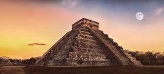
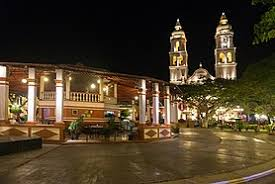
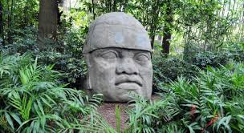
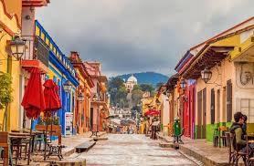
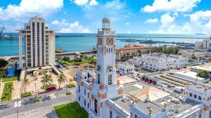
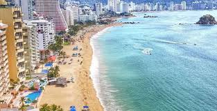
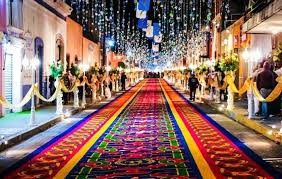
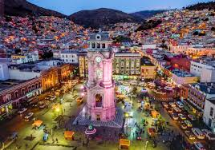

Yucatán: La Esencia de la Cultura Maya

¡Descubre la magia de Yucatán!
Yucatán te invita a sumergirte en un mundo de historia, naturaleza y cultura ancestral. Este estado del sureste de México es famoso por sus antiguas ciudades mayas, sus cristalinos cenotes y su rica gastronomía.
¿Qué no te puedes perder?
Ciudades Mayas:
Explora las majestuosas ruinas de Chichén Itzá, una de las Nuevas Siete Maravillas del Mundo Moderno. Admira la precisión arquitectónica de Uxmal y Ek Balam, y descubre los secretos de la civilización maya en cada piedra.
Cenotes:
Refrescante y místico. Yucatán es el paraíso de los cenotes, impresionantes sumideros naturales llenos de agua cristalina. Nada en sus profundidades, relájate en sus orillas o simplemente admira su belleza natural.
Centro Histórico:
Pasea por sus calles coloniales, admira su arquitectura y visita el Palacio de Gobierno.
Gastronomía:
Deleita tu paladar con platillos típicos como el cochinita pibil, el relleno negro y los marquesitas.
Playas:
Relájate en las hermosas playas de Progreso, Celestún o Sisal. Observa a los flamingos en Celestún o disfruta de actividades acuáticas en Progreso.
Rutas de los Pueblos Mágicos:
Descubre la riqueza cultural y artesanal de los Pueblos Mágicos de Yucatán, como Izamal, Valladolid y Maní.
¿Por qué visitar Yucatán?
Historia y Cultura:
Sumérgete en la fascinante historia de la civilización maya y descubre sus tradiciones ancestrales.
Naturaleza:
Explora selvas, manglares, cenotes y playas. Observa una gran variedad de flora y fauna.
Gastronomía:
Deleita tu paladar con la exquisita cocina yucateca, una fusión de sabores mayas y españoles.
Gente cálida:
Conoce a los yucatecos, conocidos por su hospitalidad y amabilidad.
¡Yucatán te espera!
¿Listo para vivir una experiencia inolvidable?
¡Planifica tu viaje ahora!
Campeche: Historia, Naturaleza y Aventura

Explora los secretos de Campeche
Campeche te invita a un viaje en el tiempo, donde la historia maya se fusiona con la arquitectura colonial y la exuberante naturaleza. Este estado costero del sureste de México te sorprenderá con sus ciudades amuralladas, sus reservas naturales y su rica cultura.
¿Qué no te puedes perder?
Ciudad de Campeche:
Admira su centro histórico declarado Patrimonio de la Humanidad por la UNESCO. Explora sus murallas, fortalezas y calles empedradas
Reserva de la Biosfera de Calakmul:
Sumérgete en una de las selvas más extensas y biodiversas de México. Observa jaguares, monos y aves exóticas.
Isla Aguada:
Relájate en sus playas, practica snorkel o buceo y disfruta de la gastronomía local.
Rutas de los Pueblos Mágicos:
Visita los Pueblos Mágicos de Campeche, como Hopelchén y Bécal, y descubre su encanto colonial y sus tradiciones.
¿Por qué visitar Campeche?
Historia y Cultura:
Recorre los vestigios de la civilización maya y admira la arquitectura colonial de la ciudad de Campeche.
Naturaleza:
Explora selvas, manglares, ríos y playas. Observa una gran variedad de flora y fauna.
Aventura:
Practica actividades como kayak, snorkel, buceo, senderismo y observación de aves.
Gastronomía:
Deleita tu paladar con los platillos típicos de la región, como el pescado a la talla y el relleno negro.
¡Planifica tu viaje ahora!
Tabasco: Corazón Verde de México

¡Sumérgete en la exuberante naturaleza de Tabasco!
Tabasco, el estado de los ríos y la selva, te invita a descubrir un paraíso tropical donde la historia, la cultura y la aventura se fusionan en una experiencia única.
¿Qué te espera en Tabasco?
Villahermosa: La Puerta de Oro:
Explora la capital tabasqueña, una ciudad moderna con un rico patrimonio cultural. Visita el Parque Museo La Venta, el Museo Regional de Antropología y el majestuoso Palacio de Gobierno.
Zonas Arqueológicas:
Descubre las antiguas ciudades olmecas, cuna de la civilización mesoamericana. Admira las colosales cabezas colosales y las enigmáticas esculturas de piedra.
Pantanos de Centla:
Navega por los misteriosos ríos y canales de esta reserva de la biosfera. Observa una gran variedad de aves, reptiles y mamíferos en su hábitat natural.
Playas y Lagunas:
Relájate en las playas de Frontera o disfruta de los deportes acuáticos en la Laguna de los Cinco.
Gastronomía:
Deleita tu paladar con los sabores de la cocina tabasqueña, famosa por sus mariscos frescos, el pejelagarto y el chocolate.
¿Por qué visitar Tabasco?
Naturaleza exuberante:
Sumérgete en una selva tropical, explora manglares y admira la belleza de los ríos y lagunas.
Historia ancestral:
Descubre las raíces de la civilización mesoamericana y conoce las antiguas culturas que habitaron esta región.
Aventura al aire libre:
Practica kayak, pesca deportiva, senderismo y muchas otras actividades en contacto con la naturaleza.
Calidez de su gente:
Conocerás a los tabasqueños, reconocidos por su hospitalidad y amabilidad.
¡Tabasco te sorprenderá!
Chiapas: Un Paraíso Escondido en México

Desvela los misterios de Chiapas
Chiapas es un estado que te cautivará con su exuberante naturaleza, su rica historia y su diversidad cultural. Desde las majestuosas cascadas hasta las antiguas ciudades mayas, Chiapas te ofrece una experiencia única y memorable.
¿Qué no te puedes perder?
San Cristóbal de las Casas:
Adéntrate en el corazón de la cultura chiapaneca. Explora sus calles empedradas, visita sus coloridos mercados y conoce las tradiciones de los pueblos indígenas.
Zonas Arqueológicas:
Descubre las antiguas ciudades mayas de Palenque, Bonampak y Yaxchilán. Admira la belleza arquitectónica y la complejidad de estas civilizaciones.
Cañón del Sumidero: /h4>
Navega por este impresionante cañón y maravíllate con sus paredes verticales que se elevan cientos de metros.
Cascadas de Agua Azul:
Refréscate en las cristalinas aguas de estas cascadas y sumérgete en la belleza de la selva.
Pueblos Mágicos:
Visita los encantadores pueblos de Chiapa de Corzo, Comitán y San Cristóbal de las Casas, y descubre su rica historia y tradiciones.
¿Por qué visitar Chiapas?
Naturaleza exuberante:
SExplora selvas, montañas, ríos y lagos. Observa una gran variedad de flora y fauna.
Cultura viva:
Conoce las tradiciones de los pueblos indígenas, como los tzotziles y tzeltales, y disfruta de sus artesanías y gastronomía.
Aventura:
Practica senderismo, rappel, kayak, buceo y muchas otras actividades al aire libre.
Espiritualidad:
Conecta con la naturaleza y encuentra paz interior en los lugares sagrados de Chiapas.
¡Chiapas te invita a vivir una experiencia inolvidable!
Veracruz: El Corazón de México

¡Descubre la magia de Veracruz!
Veracruz, el estado de los 300 años, te invita a un viaje lleno de historia, cultura y aventura. Con sus playas de ensueño, su rica gastronomía y su gente cálida, Veracruz te conquistará desde el primer momento.
¿Qué no te puedes perder?
Veracruz Puerto: :
Explora la ciudad más antigua de México, con su hermoso malecón, su fortaleza de San Juan de Ulúa y su rica historia.
Xalapa:
Descubre la capital cultural del estado, con sus museos, galerías de arte y su ambiente universitario.
Orizaba:
Visita la Ciudad de las Montañas y admira su arquitectura colonial, sus fábricas de textiles y su cercanía al Pico de Orizaba
Zonas Arqueológicas:
Conoce las antiguas civilizaciones que habitaron Veracruz, como los totonacos y los huastecos.
Costa Esmeralda:
Relájate en las playas de Tuxpan, Tecolutla y Nautla, y disfruta de actividades acuáticas como el surf y el buceo.
¿Por qué visitar Veracruz?
Historia y Cultura:
Recorre los sitios históricos de Veracruz, como el puerto y las antiguas ciudades prehispánicas.
Naturaleza exuberante:
Explora selvas, montañas, ríos y playas. Observa una gran variedad de flora y fauna.
Gastronomía deliciosa:
Deleita tu paladar con los platillos típicos de Veracruz, como el pescado a la veracruzana y los tamales de hoja de plátano.
Fiestas y tradiciones:
Vive las tradiciones veracruzanas, como el Carnaval de Veracruz y las fiestas patronales de los pueblos.
¡Veracruz te espera con los brazos abiertos!
Guerrero: Un Paraíso por Descubrir

¡Vive la aventura en Guerrero!
Guerrero, el estado de la Costa del Pacífico, te invita a disfrutar de sus playas de ensueño, su rica historia y su exuberante naturaleza. Desde las famosas playas de Acapulco hasta las tranquilas bahías de Ixtapa Zihuatanejo, Guerrero te ofrece una experiencia inolvidable.
¿Qué no te puedes perder?
Acapulco:
La ciudad más famosa de Guerrero, conocida por su vida nocturna, sus playas y sus acantilados.
Ixtapa Zihuatanejo:
Un destino turístico de lujo con hermosas playas, campos de golf y una amplia oferta de actividades acuáticas.
Taxco:
Un pueblo mágico colonial con calles empedradas, iglesias barrocas y talleres de plata.
Chilpancingo:
La capital del estado, con un rico patrimonio cultural y una arquitectura colonial.
Costa Chica:
Disfruta de las playas vírgenes, la rica gastronomía y las tradiciones de los pueblos afrodescendientes.
¿Por qué visitar Guerrero?
Playas paradisíacas:
Relájate en las playas de Acapulco, Ixtapa, Zihuatanejo y muchos otros destinos.
Historia y cultura:
Descubre las antiguas civilizaciones que habitaron Guerrero y admira su arquitectura colonial.
Aventura:
Practica surf, buceo, kayak, senderismo y muchas otras actividades al aire libre.
Gastronomía deliciosa:
Deleita tu paladar con los platillos típicos de Guerrero, como el pescado a la talla y los tamales de chipilín.
¿Listo para vivir una experiencia inolvidable?
Tlaxcala: La Cuna de la Nación

¡La magia de Tlaxcala te sorprenderá!
Tlaxcala, el estado más pequeño de México, te invita a un viaje en el tiempo. Con una rica historia prehispánica y colonial, Tlaxcala te ofrece una experiencia única donde la tradición se fusiona con la modernidad.
¿Qué no te puedes perder en Tlaxcala?
Ciudad de Tlaxcala:
Explora la capital del estado, con su arquitectura colonial, sus plazas llenas de vida y su catedral.
Zonas Arqueológicas:
Descubre las antiguas ciudades de Cacaxtla y Xochitécatl, con sus impresionantes murales y pirámides.
La Malinche:
PAsciende al volcán más alto de México y disfruta de las impresionantes vistas panorámicas.
Pueblos Mágicos:
Visita los encantadores pueblos de Huamantla y Nanacamilpa, conocidos por sus festividades y artesanías.
Rutas del Vino:
Degusta los vinos de alta calidad producidos en las viñas tlaxcaltecas.
¿Por qué visitar Tlaxcala?
Historia y Cultura:
Conoce la historia de la resistencia tlaxcalteca y admira su legado cultural.
Naturaleza:
Explora bosques, montañas y ríos. Observa una gran variedad de flora y fauna.
Tradiciones:
Vive las tradiciones de los pueblos indígenas y disfruta de sus festividades.
Gastronomía:
Deleita tu paladar con los platillos típicos de Tlaxcala, como el mole de guajolote y los tamales.
¡Planifica tu viaje ahora!
Hidalgo: La Cuna de la Independencia

¡Descubre la magia de Hidalgo!
Hidalgo, el estado que vio nacer la Independencia de México, te invita a un viaje lleno de historia, naturaleza y cultura. Con sus pintorescos pueblos, sus zonas arqueológicas y sus paisajes montañosos, Hidalgo te ofrece una experiencia única.
¿Qué no te puedes perder en Hidalgo?
Pachuca de Soto:
Explora la capital del estado, con su arquitectura colonial, sus museos y su vibrante vida cultural.
Real del Monte:
Visita este pintoresco pueblo minero y disfruta de sus casas de adobe, sus calles empedradas y su deliciosa gastronomía.
Tula:
Admira las imponentes ruinas de la antigua ciudad tolteca, con sus cabezas colosales y sus pirámides.
Prismas Basálticos:
Maravíllate con esta formación geológica única, creada por la lava volcánica.
Barranca de Metztitlán:
Practica deportes extremos o simplemente disfruta de la naturaleza en este impresionante cañón.
¿Por qué visitar Hidalgo?
Historia:
Conoce los lugares donde se gestó la Independencia de México y descubre el legado de los pueblos originarios.
Naturaleza:
Explora montañas, cañones, ríos y bosques. Observa una gran variedad de flora y fauna.
Cultura:
Vive las tradiciones de los pueblos indígenas y disfruta de su artesanía y gastronomía.
Aventura:
Practica senderismo, escalada, rappel, ciclismo de montaña y muchas otras actividades al aire libre.